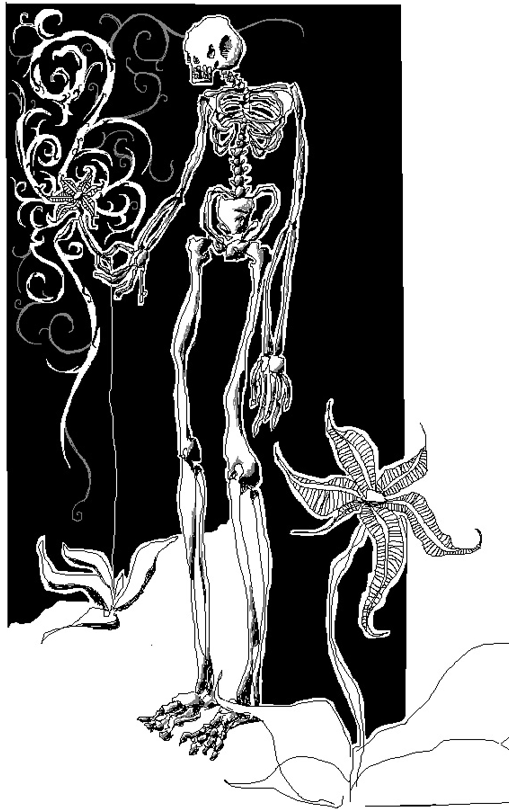

Era 8 de enero. Lo digo como si importase, en realidad no veo el propósito de las fechas. Tampoco sé por qué me acuerdo de esta fecha. Digo, seguramente por lo que estoy por contarte, pero en realidad siempre sentí que la idea de la fecha se le ocurrió a alguien que solo quería romperme las pelotas. La cuestión es que 8 de enero era y yo también, era. Porque no soy viste, por esto que estoy por contarte.
Es vueltero el viejo. En el fondo me chupa un huevo pero todavía le queda a mi vaso de vino y porqué no escucharlo decir sus truismos. De una forma u otra me voy a tener que entretener y en este bar ya nadie le da pelota. Carraspeo.
Si, si, ya va, impaciente. – Al lado entornan los ojos, ya se los habrá contado y va de vuelta, con su nueva copa y recobrado vigor – Era 8 de enero y así como estamos, me morí. Así como estamos digo, tan cómodos y tranquilos, ligeramente ebrios, sabés, me morí bien. – Lo decía serio, aunque yo no podía parar de pensar en cómo arrastró tan pesadamente el ligeramente que tan mal calificaba su ebriedad – Me morí bien. Tomó, me miró sin mirarme y repitió: Me morí bien.
Algo me intrigó, seré frágil o crédulo, pero me intrigó su muerte ese 8 de enero, previa a hablarme acá, tan vivo. Le toqué la mano en un intento de hacer que se despabile. Está acá pensé, como si no lo hubiese sabido, o como si durante un instante sus afirmaciones tan obvias y el vino me hubiesen hecho dudar. Reaccionó de golpe, como si la punta de mi dedo índice estuviese a temperatura de hervir fideos, y siguió contando evidencias.
Que no te la cuenten pibe. Acá todos piensan que la muerte es definitiva y mucho peor, que es de verdad. Digo, está sobrevaloradisima. Te lo digo yo, que me morí. Me morí así viste, con la consciencia ligeramente sucia, no hace falta que te diga que hace rato no voy a misa. Ya sabrás – Y sabía – tengo mis temas. Pero temas en serio digo, a mi la misa ya no me sirve de nada. Es como un baño polaco después de la obra entendés? Sigo todo sucio.
Hizo otra de sus pausas contemplativas en las que parecía contemplar más allá de las paredes húmedas del bar sucio. En el brillo de los ojos noté una sinceridad sorprendente para la burrada que venía de escupir. Tomé y tomó, tomamos digamos, yo con la risa entre los dientes y él con esa honestidad que se le escapaba de todos lados.
Y me morí todo sucio que se le va a hacer. Si total a mí nadie me va a ayudar viste, ya nadie puede hacer nada, y para colmo me morí. Bueno igual es lo de menos, está sobrevalorada te digo. Lo importante fue el momento, algo me marcó viste, era la primera vez que me moría al fin y al cabo. Lo de la luz es todo un cuento, lo que no te dicen es que podés sentir el corazón dejar de latir. En ese momento sabés lo que está pasando, tu corazón no late más, y lo peor de todo es que te das cuenta que te lo contaron todo al revés. También por eso no voy más a misa, dicen cada burrada, no te das cuenta hasta que te morís. Si sos vivo todavía pensas que es casi todo mentira pero, aunque sea por pura probabilidad, alguna verdad se les debe haber escapado. Nada.
Asentí. Toqué mi cruz, abajo de mi remera, y la di vueltas entre las yemas de mis dedos. No podía no asentir, no sé cómo explicarlo, estaba tan en desacuerdo pero por un momento lo entendí. En el fondo él tenía razón, se le veía de verdad. En realidad no había dicho nada todavía, solo que todos decían boludeces, pero supe que tenía razón.
Yo viví buscando ideales viste. En algún momento fui hasta lo suficientemente imbécil para creer en la revolución. Después en algún que otro modo de vida no convencional. Al final me volví un cristiano más, me confesé dos o tres veces (había con qué), pero ese padre hijo de puta. Yo te juro – No debería hacerlo en vano – me dió tantos ave marías para hacer que creo que todavía no terminé, y hago uno todos los días. Imaginate la de mocos que me mandé. Alguno que otro de los ideales lo cumplí igual, viví contento en ese delirio sado-maso-hedonista que más o menos cumplí haciéndome pelota con vino barato y algún whisky cuando había aguinaldo. Ya ahí abandoné la idea de ir al cielo, es el único ideal que no perseguí. – Hizo una pausa larga, fondeó su vino con ímpetu casi rencoroso y siguió, mirando a la pared, hablando sin mirarme. – En realidad un rato si quise pero hay tantas cosas viste. Y la uva me habla. Si hubiese sido sidra hubiese sido más poético, que macana. Pero es muy dulce qué se yo.
Cuestión que me la vengo mandando viste. Y cuando me morí, cuando sentí que mi corazón se frenaba, algo de resentimiento tuve hacia mi mismo. En realidad a uno no le termina de interesar el cielo hasta que se muere, de golpe el corazón y las puertas equivocadas, bueno. Pero en realidad todo eso es mentira, te lo decía recién. En realidad el infierno nos lo inventamos entendés? Bueno el cielo en teoría también pero no te lo puedo confirmar que digamos, si existiese no hubiese ido. Pero el infierno nos lo inventamos y eso lo sé seguro.
Estaba seguro. Amagó con tomar pero ya se había terminado el vaso. Ya no sabía con que marcar el final de sus afirmaciones. Mientras yo tomaba mi último sorbo él pidió un pucho a una de las mesas que nos estaba ignorando. Ya nada me ataba a la mesa, a la conversación, pero lo prendió y siguió. Ni siquiera intenté irme.
El infierno es de mentira porque sigo acá entendés? El infierno es de mentira porque hice lo que hice y sigo acá. Siempre pensé que me había inventado todos esos ideales para que no se me cruzara por la cabeza la moral y todas esas cosas importantes de verdad. Vengo a darme cuenta que todo está igual de podrido. No es más real el infierno que mi ideal de dos meses que abandoné por el siguiente entendés. Ni es más real lo bueno. O lo malo. Vas a pensar que soy conspiranoico – No lo pensaba, no podría haberlo pensado, aunque la razón y otras casi obviedades – pero todo eso se lo inventaron. O nos lo inventamos. En el fondo no digo nosotros porque me gusta lavarme las manos. Pero créeme cuando te digo esto pibe, todo eso es mentira. No sabés la bronca que tengo de haber hecho todos esos ave marías y padres nuestros. El muy forro también me había dado padres nuestros.
Cuando dijo eso hizo rápida y mecánicamente el gesto. Estaba enojado y se le veía.
Te lo contaron todo mal pibe, el cuerpo deja el alma, no al revés.
Aplastó el pucho en el cenicero, y en la montaña de ceniza llegué a ver, por un segundo, el alma incandescente que se iba del resto del cigarrillo, amarillo y muerto.

